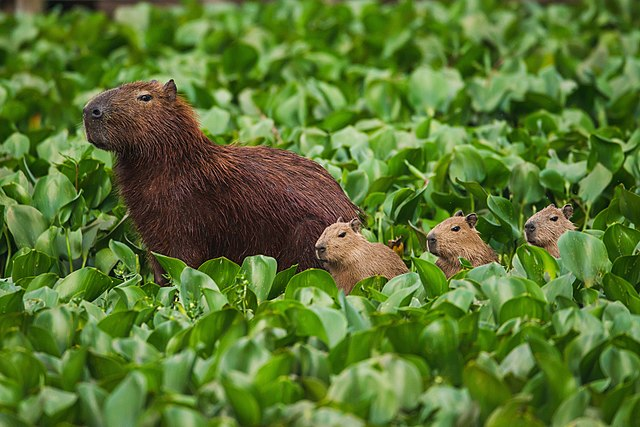

Capybara
The capybara[a] or greater capybara (Hydrochoerus hydrochaeris) is a giant cavyrodent native to South America. It is the largest living rodent[2] and a member of the genus Hydrochoerus. The only other extant member is the lesser capybara (Hydrochoerus isthmius). Its close relatives include guinea pigs and rock cavies, and it is more distantly related to the agouti, the chinchilla, and the nutria. The capybara inhabits savannas and dense forests, and lives near bodies of water. It is a highly social species and can be found in groups as large as 100 individuals, but usually live in groups of 10–20 individuals. The capybara is hunted for its meat and hide and also for grease from its thick fatty skin.[3] It is not considered a threatened species.

Ecology
Desription
The capybara has a heavy, barrel-shaped body and short head, with reddish-brown fur on the upper part of its body that turns yellowish-brown underneath. Its sweat glands can be found in the surface of the hairy portions of its skin, an unusual trait among rodents.[7] The animal lacks down hair, and its guard hair differs little from over hair.[12]
Adult capybaras grow to 106 to 134 cm (3.48 to 4.40 ft) in length, stand 50 to 62 cm (20 to 24 in) tall at the withers, and typically weigh 35 to 66 kg (77 to 146 lb), with an average in the Venezuelan llanos of 48.9 kg (108 lb).[13][14][15] Females are slightly heavier than males. The top recorded weights are 91 kg (201 lb) for a wild female from Brazil and 73.5 kg (162 lb) for a wild male from Uruguay.[7][16] Also, an 81 kg individual was reported in São Paulo in 2001 or 2002.[17] The dental formula is 1.0.1.31.0.1.3.[7] Capybaras have slightly webbed feet and vestigial tails.[7] Their hind legs are slightly longer than their forelegs; they have three toes on their rear feet and four toes on their front feet.[18] Their muzzles are blunt, with nostrils, and the eyes and ears are near the top of their heads.
Diet and Predation
Capybaras are herbivores, grazing mainly on grasses and aquatic plants,[14][24] as well as fruit and tree bark.[15] They are very selective feeders[25] and feed on the leaves of one species and disregard other species surrounding it. They eat a greater variety of plants during the dry season, as fewer plants are available. While they eat grass during the wet season, they have to switch to more abundant reeds during the dry season.[26] Plants that capybaras eat during the summer lose their nutritional value in the winter, so they are not consumed at that time.[25] The capybara’s jaw hinge is not perpendicular, so they chew food by grinding back-and-forth rather than side-to-side.[27] Capybaras are autocoprophagous,[28] meaning they eat their own feces as a source of bacterial gut flora, to help digest the cellulose in the grass that forms their normal diet, and to extract the maximum protein and vitamins from their food. They also regurgitate food to masticate again, similar to cud-chewing by cattle.[28][29] As is the case with other rodents, the front teeth of capybaras grow continually to compensate for the constant wear from eating grasses;[19] their cheek teeth also grow continuously.[27]
Social organization
Capybaras are known to be gregarious. While they sometimes ive solitarily, they are more commonly found in groups of around 10–20 individuals, with two to four adult males, four to seven adult females, and the remainder juveniles.[33] Capybara groups can consist of as many as 50 or 100 individuals during the dry season[29][34] when the animals gather around available water sources. Males establish social bonds, dominance, or general group consensus.[34] They can make dog-like barks[29] when threatened or when females are herding young.[35]
Activities
Though quite agile on land, capybaras are equally at home in the water. They are excellent swimmers, and can remain completely submerged for up to five minutes,[14] an ability they use to evade predators. Capybaras can sleep in water, keeping only their noses out. As temperatures increase during the day, they wallow in water and then graze during the late afternoon and early evening.[7] They also spend time wallowing in mud.[18] They rest around midnight and then continue to graze before dawn.[7]
Popularity and meme culture
In the early 2020s, capybaras became a growing figure of meme culture due to many factors, including the disturbances in Nordelta[54] which led to them being comically postulated as figures of class struggle. Also, a common meme format includes capybaras in various situations with the song “After Party” by Don Toliver,[56] leading to a tremendous growth in popularity. [57] Due to a lyric in Toliver’s song, capybaras are also associated with the phrase “Ok I pull up”.[58]